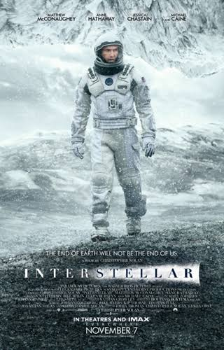

Em um futuro em que a Terra enfrenta graves problemas ambientais e a humanidade corre o risco de desaparecer, o ex-piloto e engenheiro Cooper é escolhido para participar de uma missão espacial. Junto com uma equipe de cientistas, ele atravessa um buraco de minhoca próximo a Saturno em busca de um novo planeta que possa servir como lar para a humanidade. Durante a missão, Cooper enfrenta diversos desafios e precisa tomar decisões que podem afetar o futuro de sua família e de toda a espécie humana.